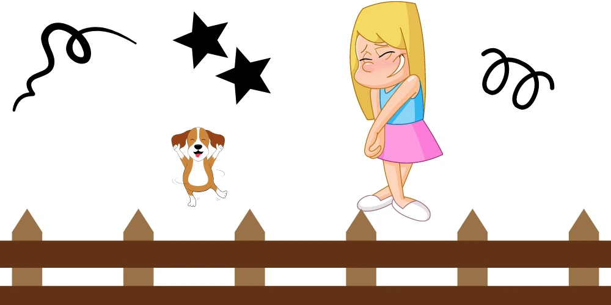
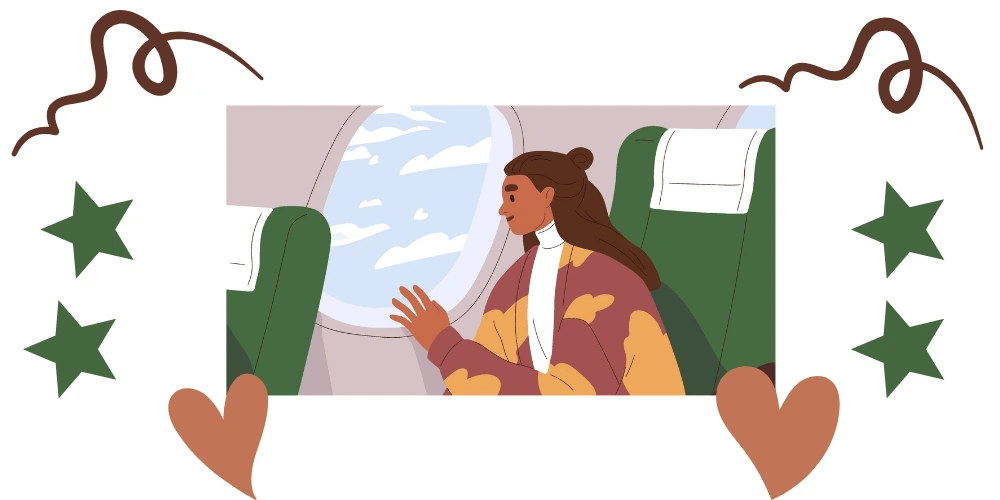

Shyness is a common trait among children and adults from all walks of life. Characterized by feelings of self-consciousness, self-criticism, and a reluctance to enter social situations, shyness has a negative impact on many aspects of a person’s life, including their relationships and career. Most importantly, shyness is a sense of awkwardness or apprehension that some people consistently feel when approaching or being approached by others. Take your first steps in getting past shyness by reading strategies on how to overcome your shyness.

What’s Shyness?
Shyness is a response to fear, and research suggests that although there’s the neurobiology of shyness the behavioural repertoire is orchestrated by a specific circuit of neurons in the brain. It is also strongly influenced by parenting practices and life experiences.
Shyness can truly hold people back partly because those who are shy tend to avoid public situations and speaking up, and partly because they experience so much chronic anxiety.
If that’s you take comfort in knowing you are far from alone, 4 out of 10 people consider themselves why.
What Causes Shyness?
About 15 per cent of infants are born with a tendency toward shyness. Research has shown biological differences in the brains of shy people. But a propensity for shyness also is influenced by social experiences. It’s believed that most shy children develop shyness because of interactions with parents. Parents who are authoritarian or overprotective can cause their children to be shy. Children who aren’t allowed to experience things may have trouble developing social skills.
In adults, highly critical work environments and public humiliation can lead to shyness. Shyness emerges from a few key characteristics:
- Self-consciousness
- Negative self-preoccupation
- Love self-esteem
- Fear of judgement
- Rejection
Shy people often make unrealistic social comparisons, pitting themselves against the most vibrant or outgoing individuals.
— Does fear of embarrassment cause you to avoid doing things or speaking to people?
— Do you avoid activities in which you are the centre of attention?
— Are being embarrassed or looking stupid among your worst fears?
If you answer yes to at least two of these questions, you are probably shy. If these fears cause you to hide at home or avoid contact with anyone but your closest friends, you might consider some effective strategies to overcome your shyness.
Can shyness be overcome?
One of the most important questions Shy people ponder is ” Can shyness be overcome? “
YES! Overcoming shyness is possible.
Shy people can sometimes have a calming effect on those who are more high strung. Though you may experience inner turmoil as a shy person, your outward appearance is probably one of being calm and even keel. This calmness and ability to “not react” may have a positive effect on those around you.
But here’s the good news: Shyness can be overcome. With time and effort and a desire to change, it’s possible to break through. If your shyness is severe, you may need help from a therapist or counsellor, but most people can overcome it on their own. Read on to learn strategies on how to overcome your shyness.
How to overcome your shyness?
Here are some trusty tips to help you come out of your shell and show your shyness who’s boss:
Be Mindful
If you struggle with shyness, you might find yourself entering a cycle of self-criticism before you’re even conscious of it. If you struggle with shyness, you might find yourself entering a cycle of self-criticism before you’re even conscious of it. Practice noticing the thoughts and feelings that come up when you think about entering into a social situation. Notice what your internal dialogue is saying and the judgements you are making about yourself.
In addition, use your senses to stay in the present moment. Become aware of what you hear, see, smell, or taste at that moment. Look for positive things around you such as a nice environment or interesting people. When you are in a social situation, deliberately focus on being present. This will help you to stop the thoughts in your head.
How to trust your intuition to overcome your shyness
Here are some questions and thoughts that shy people ponder when they are in social situations.
- What should I say?
- I wanted to say that.
- I cannot think of anything to add to the conversation.
- How much should I tell?
- Will my comment hurt someone’s feelings?
- is this a smart thing to say?
- Where should I start?
- When is a good time to chime in?
- Will others be interested?
- Am I interrupting?
When they finally decide to talk and are waiting for a gap to insert their comment, they realize that the topic of the conversation has already changed.
Too late. So they decide not to share their thoughts and start the process again with the new conversation topic. This is particularly frequent in group conversations or meetings. Next time, instead of overthinking, trust your intuition and speak up.
Self-talk yourself up
Positive self-talk ain’t easy, but if you practice for a while and get better at it, it will work a charm in boosting your self-confidence. You’d be surprised how much of a difference a bit of self-love can make.
- Have a purpose higher than self
- Don’t compare yourself to others
- Believe in your success
- Don’t fear failure
- Replace negative thoughts with positive thoughts
Practice to overcome your shyness
As anxiety-provoking as the prospect might feel, the most effective step to overcoming shyness is to practice.
Although your first instinct might be to avoid social situations altogether, deliberately seeking out interactions with other people on a regular basis will help normalise social situations. The more you can enter interactions and social gatherings and leave in one piece, the more you will learn to trust yourself. Over time, the sense of fulfilment you get from these situations will replace the sense of fear you feel right now.
Remember that your first few practice attempts will feel hard. You won’t overcome your shyness overnight and it might be tempting to quit along the way. If you can stick with it, however, it will become easier over time.
Talk to your neighbours, work colleagues, and family members. Ask a question or share some information. Don’t judge yourself for making silly or irrelevant comments. If you are too harsh on yourself every time you talk you won’t even try. Think of talking to others as a learning experience. If you are determined to overcome your shyness, embrace every opportunity to talk to others.
Know your strengths
What are you good at?
What are your interests?
Join groups about topics that you find interesting. This will make it easier to connect with others and share your opinion. Everyone has areas of strengths and weaknesses. However, focusing on your strengths makes you feel more confident. It is easier to talk about a topic that you are interested in.
Make a list of all your positive qualities–enlist a friend or family member to help if you need to–and read or recite it when you’re feeling insecure. Let it remind you how much you have to offer.
How to encourage yourself to overcome your shyness
Sometimes we really are our own worst enemy. Don’t allow your inner critic to put you down. Instead, analyze the power of that voice so you can defuse it. Combat the self-criticism you experience by exercising your self-compassion muscle instead. As soon as you become aware of your inner critic, practice finding ways to empathise with yourself and your situation. Also, if you are wondering how to overcome shyness, having positive thoughts about yourself and others will make you feel motivated to participate in social situations.
Shut down your imaginations
Shy people sometimes feel disapproval or rejection even when it isn’t there. People probably like you much more than you give yourself credit for. Especially when you spend a lot of time inside your own head, as shy people tend to do, it’s easy to distort experiences, to think that your shyness ruined an entire event–when chances are it wasn’t a big deal to anyone but you.
Set an intention for each interaction
Sometimes when we participate in social situations, we feel self-conscious and believe that everyone is there to catch and point out our mistakes.
We imagine people judging us for every word and action. The worst part is that when we feel awkward, tense, and nervous we may say or do more weird things than when we feel calm and relaxed. In our mind, we believe that others have the same behaviour pattern as the people who raised us. So if our parents were very critical, we will assume that everyone around us is also very critical. It is easier to overcome shyness if we think that others are doing the best they can and so are we.
Take some of the uncertainty out of each interaction by setting an intention for each conversation you enter. This might be an intention to really listen, an intention to find out more about someone, an intention to ask someone about a particular topic, or anything else that is relevant to the situation.

Build your self-esteem
Our self-esteem impacts many aspects of our lives such as how we think about ourselves and how we interpret social situations.
When we feel shy, we worry about making mistakes and what others may think about us. In addition, low self-esteem and shyness could lead to anxiety, depression, and loneliness. On the other hand, having high self-esteem means that you are able to view yourself in a positive way regardless of mistakes or shortcomings.
If you focus on building your self-esteem, you will feel more confident when interacting with others and will believe that you have useful information to share with them.
Get support
If you’ve been struggling with shyness for a while, you might not have a huge support network, however, support is very important.
Whether it’s a friend, a family member, a colleague, or a professional, finding someone who will offer you compassion and support as you overcome your shyness will make a positive difference to your experience.
Overcoming shyness is possible, but it may not feel easy. If you’ve given these tips a go and you’re still having trouble, you might want to talk it over with someone you trust, such as a family member, teacher or counsellor. If you’re really struggling with your shyness, there might be something else going on. Make an appointment with a GP or mental health professional, who can talk it through with you and help you to come up with a plan.
Lastly, our friendly team of Psychiatrists and Psychologists would love to help you on your journey toward overcoming shyness. Contact our team if you would like to discuss treatments. Take your first steps in getting past shyness Today!